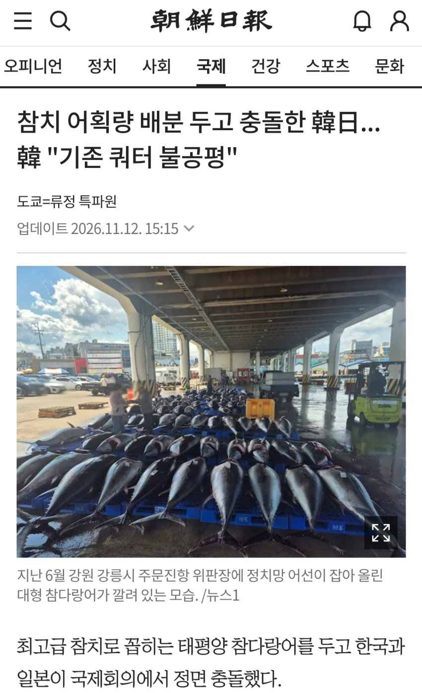
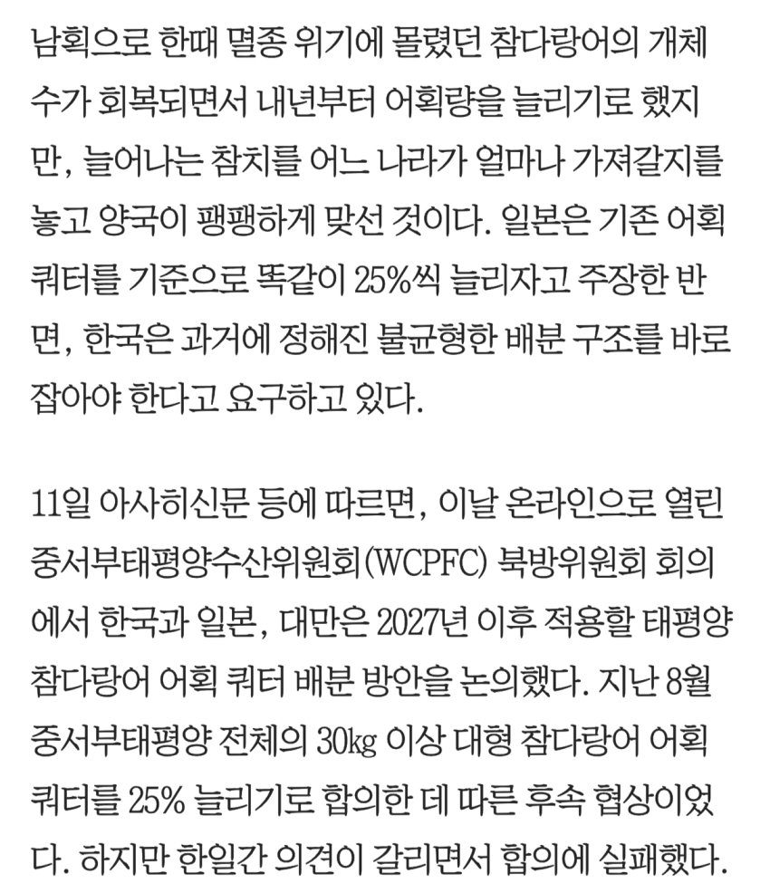
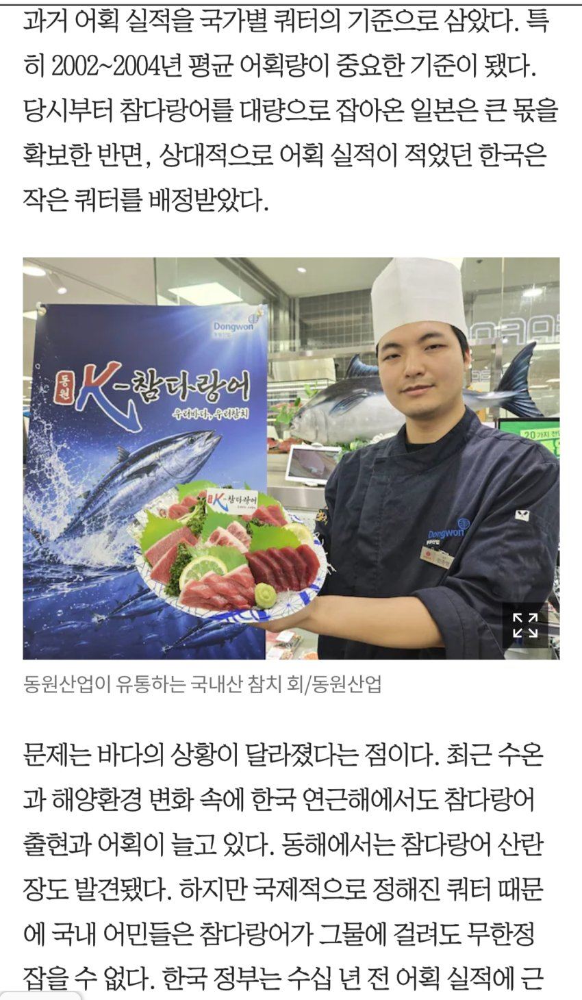
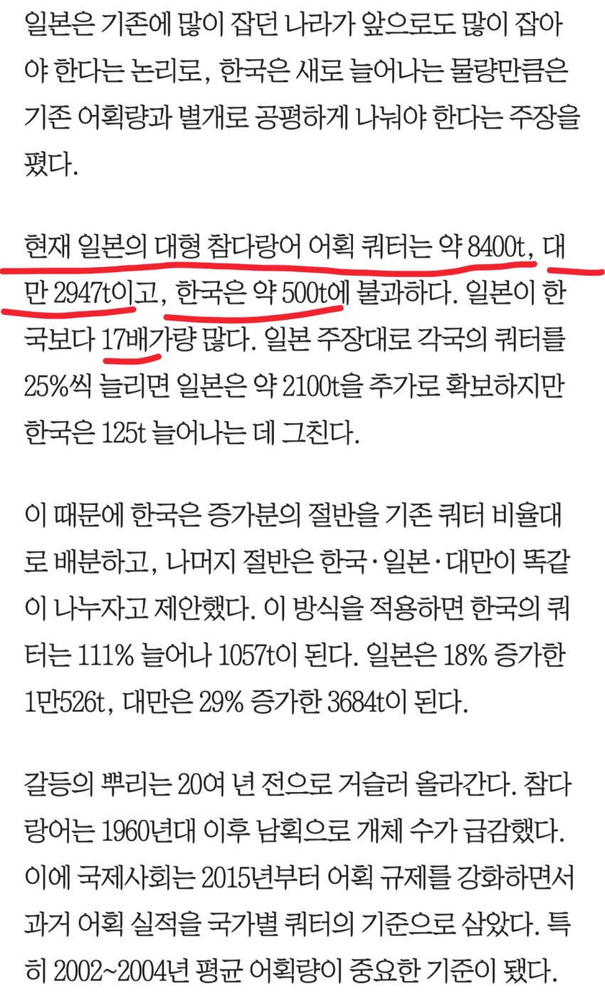
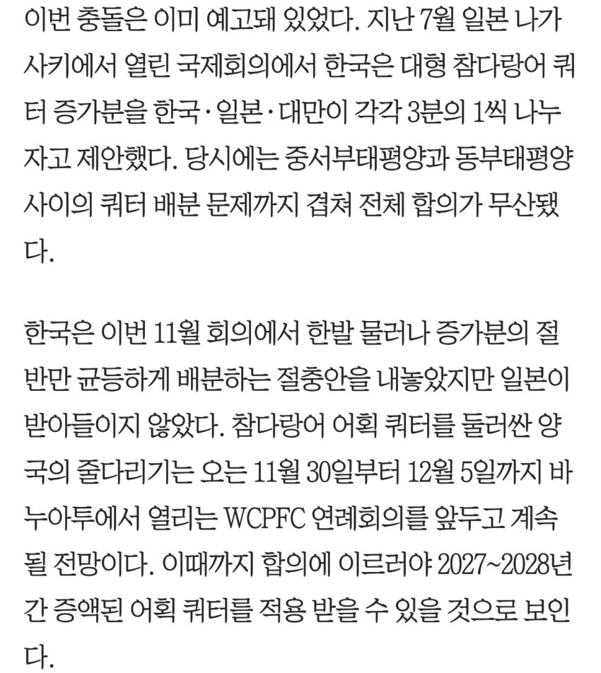
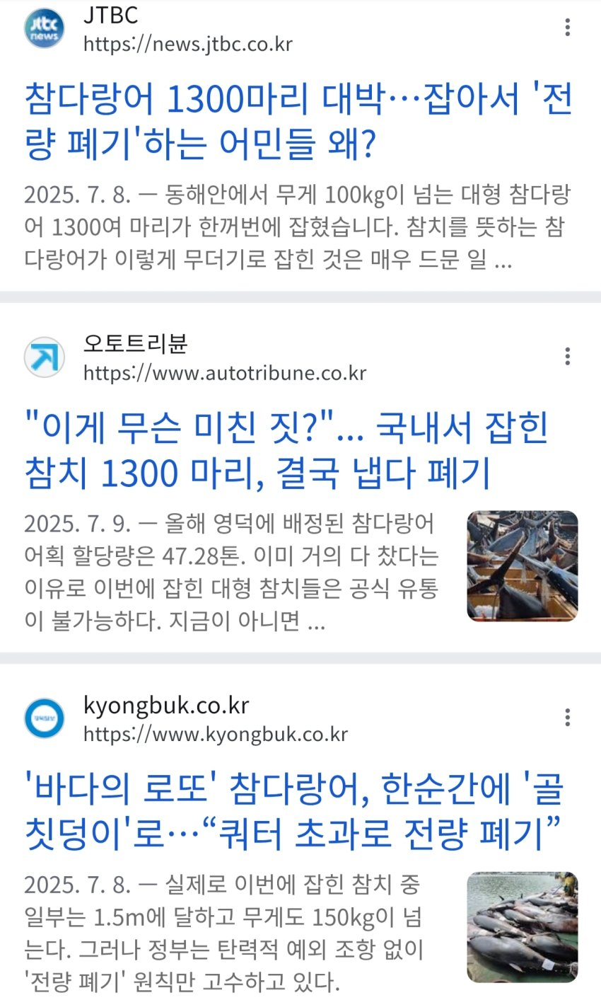
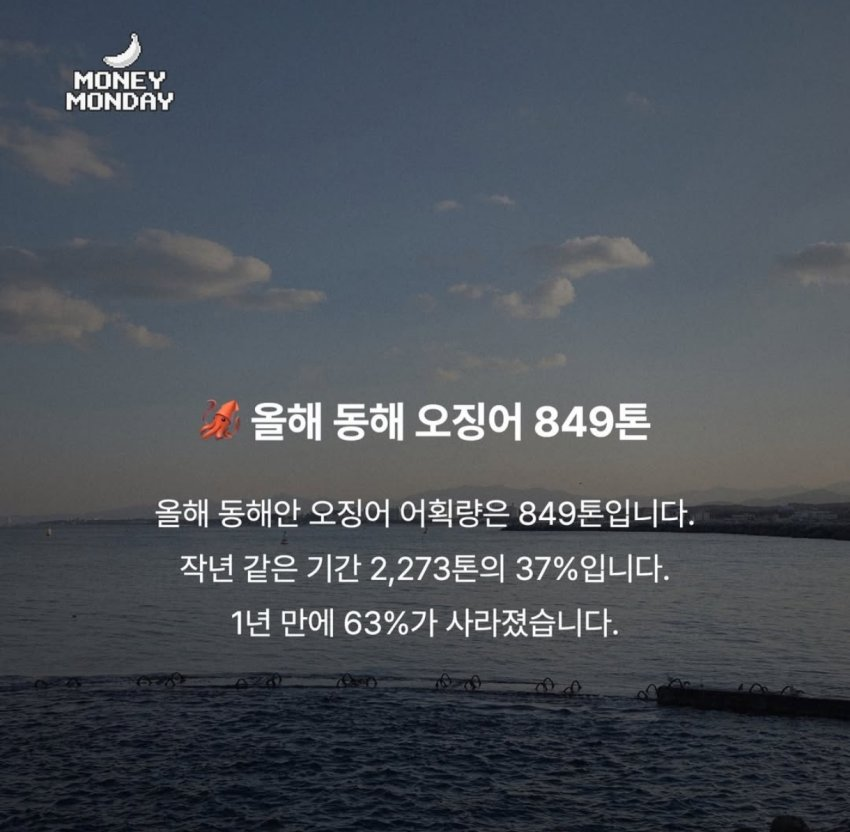

근래들어 기후변화로 동북아에서 잡히는 수산물지도가 크게 변함
한국도, 일본도 기존 어종어획량은 대체로 줄고 참치어획량이 크게 늘었다함
하지만 작년까지 한국은 동해안 연안에서 참치를 잡아도 폐기해야했음..

국제 쿼터 한계 초과로 폐기함
참고로 몇년간 동해안 연안 참치 어획량은 10배 이상 늘었다
(이것도 바다에 널린거 일부러 안 잡은거라함)
반면, 오징어는 10분의 1토막남..ㅡㅠ
해마다 반토막나는 중...

2040년쯤엔 아예 안 잡힐거라고 한다
참치는 소형어 쿼터, 대형어 쿼터로 분리되어 있는데
소형어 쿼터는 올해 작년보다 63퍼 늘려놔서 급한 불 껐지만,
본문의 대형어 쿼터는 500톤으로 턱없이 부족함
(올해 소형어 쿼터는 1219톤)
지역별로는 경북과 강원도가 거의 반반씩 나눠가지고 있다
일본입장
=> 마! 일단 기존 일본 8400톤, 한국 500톤을 기준으로 쿼터 25퍼씩 올리제이 ㅁㅌㅊ?
한국입장
=> 이건 뭔.. ㅇㅁ없노? 너거 2100톤 늘리고 우린 125톤 늘리자고? 지금 잡히는거 족족 버리고 있는판에 씹.. 걍 똑같이 늘려라이
최근2차례 국제회의서 충돌해서 개싸움나니까
한국: 그럼 양보할테니까 늘어난 쿼터 중 절반은 일본뜻대로하고, 나머지 절반은 내 뜻대로 나누는 하는걸로 하자잉 이럼
일본: 응 싫어~
이게 지금 현재 상황임 ㅇㅇ;
댓글
수집 당시 댓글 259개
· ㅇㅇ · 11.13 20:03:14
· ㅇㅇ · 11.13 20:49:07
ㅁㄴㅇ · 11.13 19:59:19
ㅇㅇ · 11.13 20:00:58
· ㅇㅇ · 11.13 20:02:23
ㅇㅇ · 11.13 20:01:25
피폭수 태평양 배출
ㅇㅇ · 11.13 20:02:02
태평양 참치 잡아 냠냠섭취
ㅇㅇ · 11.13 20:02:32
피폭의 선순환 딱좋다
ㅇㅇ · 11.13 20:03:54
· ㅇㅇ · 11.13 20:05:16
· ㅇㅇ · 11.13 20:07:47
· ㅇㅇ · 11.13 20:08:36
· ㅇㅇ · 11.13 20:41:37
· ㅇㅇ · 11.13 22:53:22
ㅇㅇ · 11.13 20:09:38
ㅇㅇ · 11.13 20:10:31
ㅇㅇ · 11.13 20:12:47
· ㅇㅇ · 11.13 20:15:57
ㅇㅇ · 11.13 20:13:01
· 공정성장 · 11.14 06:58:23
ㅇㅇ · 11.13 20:14:18
ㅇㅇ · 11.13 20:15:19
ㅇㅇ · 11.13 20:16:00
ㅇㅇ · 11.13 20:18:58
ㅇㅇ · 11.13 20:24:20
ㅇㅇ · 11.13 20:24:56
ㅇㅇ · 11.13 20:25:46
ㅇㅇ · 11.13 20:31:35
ㅇㅇ · 11.13 20:35:21
고기마스터 · 11.13 20:36:48
· ㅇㅇ · 11.13 23:01:47
· ㅇㅇ · 11.14 08:34:43
ㅇㅇ · 11.13 20:43:25
ㅇㅇ · 11.13 20:44:34
ㅇㅇ · 11.13 20:47:35
· ㅇㅇ · 11.14 06:59:58
ㅇㅇ · 11.13 20:47:51
ㅇㅇ · 11.13 20:56:58
ㅇㅇ · 11.13 20:58:38
ㅇㅇ · 11.13 21:01:44
ㅇㅇ · 11.13 21:07:27
· 공정성장 · 11.14 06:57:41
ㅇㅇ · 11.13 21:11:44
ㅇㅇ · 11.13 21:13:21
ㅇㅇ · 11.13 21:15:23
· ㅇㅇ · 11.13 21:33:50
· ㅇㅇ · 11.14 05:28:30
ㅇㅇ · 11.13 21:24:08
ㅇㅇ · 11.13 21:26:07
ㅇㅇ · 11.13 21:35:16
ㅇㅇ · 11.13 21:35:16
ㅇㅇ · 11.13 21:39:14
· ㅇㅇ · 11.14 01:32:14
강가딘 · 11.13 21:50:03
ㅇㅇ · 11.13 21:50:12
강가딘 · 11.13 21:50:50
· ㅇㅇ · 11.14 04:39:12
· ㅇㅇ · 11.14 09:41:56
JungNu · 11.13 21:53:40
ㅇㅇ · 11.13 22:15:30
ㅇㅇ · 11.13 22:28:06
ㅇㅇ · 11.13 22:29:43
ㅇㅇ · 11.13 22:35:09
· ㅇㅇ · 11.13 22:54:10
ㅇㅇ · 11.13 22:53:23
ㅇㅇ · 11.13 23:01:26
ㅇㅇ · 11.13 23:04:49
ㅇㅇ · 11.13 23:07:23
ㅇㅇ · 11.13 23:11:41
ㅇㅇ · 11.13 23:12:08
· ㅇㅇ · 11.13 23:14:49
ㅇㅇ · 11.13 23:57:34
ㅇㅇ · 11.14 00:44:29
· ㅇㅇ · 11.14 08:34:25
VWVWV · 11.14 01:19:47
ㅇㅇ · 11.14 01:22:43
ㅇㅇ · 11.14 01:58:03
ㅇㅇ · 11.14 01:58:08
ㅇㅇ · 11.14 02:18:03
ㅗ · 11.14 02:27:45
ㅇㅇ · 11.14 02:49:48
· ㅇㅇ · 11.14 07:01:30
ㅇㅇ · 11.14 04:23:23
짱~깨
· 공정성장 · 11.14 06:57:20
ㅇㅇ · 11.14 05:08:49
· ㅇㅇ · 11.14 07:01:37
ㅇㅇ · 11.14 05:10:59
ㅇㅇ · 11.14 05:54:27
ㅇㅇ · 11.14 06:06:52
· 공정성장 · 11.14 07:40:20
FT-FWMC · 11.14 07:29:28
ㅇㅇ · 11.14 08:28:59
ㅇㅇ · 11.14 09:18:44
ㅇㅇ · 11.14 09:43:49
ㅇㅇ · 11.14 09:50:02
ㅇㅇ · 11.14 10:06:34
ㅇㅇ · 11.14 10:13:55
ㅇㅇ · 11.14 14:28:30
ㅇㅇ · 11.14 15:10:56
ㅇㅇ · 11.14 17:51:05
· ㅇㅇ · 11.13 19:57:55
ㅇㅇ · 11.13 19:44:35
ㅇㅇ · 11.13 19:44:50
· 공정성장 · 11.13 19:45:38
· 공정성장 · 11.13 19:46:12
· 공정성장 · 11.13 19:50:07
ㅇㅇ · 11.13 19:45:13
2456778 · 11.13 19:45:24
· ㅇㅇ · 11.13 19:47:52
DC전사쿠루미쨩 · 11.13 19:45:32
ㅇㅇ · 11.13 19:45:33
· ㅇㅇ · 11.13 19:48:32
ㅇㅇ · 11.13 19:45:48
· 공정성장 · 11.13 19:50:41
ㅇㅇ · 11.13 19:45:49
· ㅇㅇ · 11.13 19:47:22
· ㅇㅇ · 11.13 19:49:32
공정성장 · 11.13 19:45:58
ㅇㅇ · 11.13 19:46:06
· ㅇㅇ · 11.13 19:46:19
· 겐쉰프 · 11.13 19:46:39
토라만 · 11.13 19:46:24
ㅇㅇ · 11.13 19:46:33
정부는
머하노?
ㅇㅇ · 11.13 19:46:42
· ㅇㅇ · 11.13 21:14:45
· ㅇㅇ · 11.14 09:40:30
ㅇㅇ · 11.13 19:46:48
ㅇㅇ · 11.13 19:46:59
ㅇㅇ · 11.13 19:47:23
ㅇㅇ · 11.13 19:47:24
ㅇㅇ · 11.13 19:48:08
ㅇㅇ · 11.13 19:48:10
ㅇㅇ · 11.13 19:48:17
ㅇㅇ · 11.13 19:48:26
· ㅇㅇ · 11.13 19:48:36
ㅇㅇ · 11.13 19:48:26
· ㅇㅇ · 11.13 19:51:09
· ㅇㅇ · 11.13 19:54:47
· ㅇㅇ · 11.13 19:56:02
· ㅇㅇ · 11.13 19:56:08
· ㅇㅇ · 11.13 20:01:55
· ㅇㅇ · 11.13 20:04:28
· ㅇㅇ · 11.13 20:22:43
· ㅇㅇ · 11.13 20:26:55
· ㅇㅇ · 11.13 20:29:14
· ㅇㅇ · 11.13 20:31:07
· ㅇㅇ · 11.13 20:32:38
· ㅇㅇ · 11.13 20:38:04
· ㅇㅇ · 11.13 20:56:37
· ㅇㅇ · 11.13 20:59:52
· ㅇㅇ · 11.13 21:41:44
NFT,메타버스,AI(인공지능)렛츠고 · 11.13 19:48:33
· 공정성장 · 11.13 19:50:24
ㅇㅇ · 11.13 19:48:33
해갤러 · 11.13 19:48:49
짱쪽
일체
케넷 · 11.13 19:49:42
· ㅇㅇ · 11.13 19:55:41
ㅇㅇ · 11.13 19:49:52
ㅇㅇ · 11.13 19:51:01
· ㅇㅇ · 11.13 19:53:46
· ㅇㅇ · 11.13 19:55:31
· ㅇㅇ · 11.13 21:26:17
· ㅇㅇ · 11.13 21:43:06
· ㅇㅇ · 11.13 23:26:59
· ㅇㅇ · 11.14 09:38:27
공정성장 · 11.13 19:51:04
ㅇㅇ · 11.13 19:51:43
ㅇㅇ · 11.13 19:53:28
엔갤러 · 11.13 19:53:36
서해짱깨어선이나쳐막지똑같이하노짱센일체
ㅇㅇ · 11.13 19:53:39
· ㅇㅇ · 11.13 19:53:56
· ㅇㅇ · 11.14 01:17:41
ㅇㅇ · 11.13 19:54:28
· 엔갤러 · 11.13 19:55:39
노지금무라현노방탄옵하들이동해라했는데?
· ㅇㅇ · 11.14 08:34:56
ㅇㅇ · 11.13 19:55:27
· 카즈야 · 11.13 19:56:50
· 공정성장 · 11.13 20:05:14
· ㅇㅇ · 11.13 22:50:59
ㅇ · 11.13 19:55:31
· ㅇㅇ · 11.13 20:07:11
· ㅇㅇ · 11.13 21:40:19
· ㅇㅇ · 11.13 22:52:07
ㅇㅇ · 11.13 19:56:03
· ㅇㅇ · 11.13 19:57:31
· ㅇㅇ · 11.13 20:06:36
카즈야 · 11.13 19:56:29
· 공정성장 · 11.14 06:59:17
· 공정성장 · 11.14 06:59:38
ㅇㅇ · 11.13 19:56:43
리짜
이밍
· ㅇㅇ · 11.13 19:56:49
시대
ㅇㅇ · 11.13 19:56:46
ㅇㅇ · 11.13 19:56:59
· ㅇㅇ · 11.13 19:57:53
· ㅇㅇ · 11.13 20:06:09
ㅇㅇ · 11.13 19:57:19
· ㅇㅇ · 11.13 19:57:30
ㅇㅇ · 11.13 19:58:12
ㅇㅇ · 11.13 19:58:30
· ㅇㅇ · 11.13 20:01:55
ㅇㅇ · 11.12 20:10:31
ㅇㅇ · 11.12 20:10:35
· ㅇㅇ · 11.13 19:44:48
· ㅇㅇ · 11.13 19:46:58
· NFT,메타버스,AI(인공지능)렛츠고 · 11.13 19:47:24
· 카즈야 · 11.13 19:55:23
ㅇㅇ · 11.12 20:10:49
ㅇㅇ · 11.12 20:11:54
ㅇㅇ · 11.12 20:11:54
ㅇㅇ · 11.12 20:12:14
ㅇㅇ · 11.12 20:12:15
삭제됨 · 11.12 20:12:27
· ㅇㅇ · 11.12 20:13:40
· ㅇㅇ · 11.12 20:14:50
· ㅇㅇ · 11.12 20:15:57
· ㅇㅇ · 11.12 20:16:14
· ㅇㅇ · 11.12 20:17:50
· ㅇㅇ · 11.12 20:18:07
· ㅇㅇ · 11.12 20:19:51
· ㅇㅇ · 11.12 20:20:49
· PaleWhale · 11.12 20:34:01
· ㅇㅇ · 11.12 20:39:03
· ㅇㅇ · 11.13 19:47:06
· ㅇㅇ · 11.13 19:47:30
· ㅇㅇ · 11.13 19:49:27
개댇지 · 11.12 20:17:30
· ㅇㅇ · 11.13 20:00:57
ㅇㅇ · 11.12 20:24:29
· ㅇㅇ · 11.12 20:25:30
· ㅇㅇ · 11.13 19:51:38
ㅇㅇ · 11.13 19:40:52
· ㅇㅇ · 11.13 19:41:08
· ㅇㅇ · 11.13 19:41:21
· ㅇㅇ · 11.13 19:44:33
· ㅇㅇ · 11.13 19:45:06
· ㅇㅇ · 11.13 19:50:11
· ㅇㅇ · 11.13 19:51:03
ㅇㅇ · 11.13 19:41:40
ㅇㅇ · 11.13 19:41:57
ㅇㅇ · 11.13 19:42:26
ㅇㅇ · 11.13 19:42:39
ㅇㅇ · 11.13 19:42:43
· ㅇㅇ · 11.13 19:50:34
ㅇㅇ · 11.13 19:42:58
ㅇㅇ · 11.13 19:42:59
ㅇㅇ · 11.13 19:43:05
푸른반복 · 11.13 19:43:07
· 겐쉰프 · 11.13 19:43:34
· 푸른반복 · 11.13 19:43:57
· ㅇㅇ · 11.13 19:47:58
· ㅇㅇ · 11.13 22:55:17
겐쉰프 · 11.13 19:43:28
· ㅇㅇ · 11.13 20:09:40
ㅇㅇ · 11.13 19:43:44
· ㅇㅇ · 11.13 20:09:58
ㅇㅇ · 11.13 19:44:06
ㅇㅇ · 11.13 19:44:23
ㅇㅇ · 11.13 19:44:32
· ㅇㅇ · 11.13 19:44:58